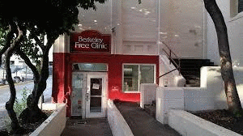
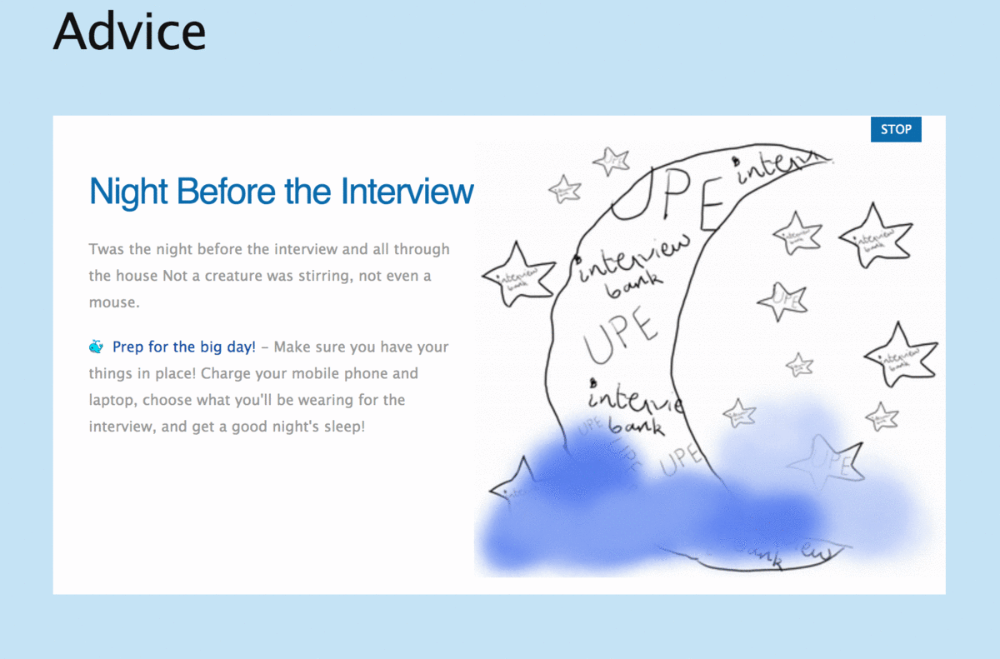

Some of my projects:

Complaint System - Berkeley Free Clinic

Bat Hunt Game

UPE - advice page + website
Some other projects:
Check out my resume for more projects! Click here to ask me for it :) !
Why do I not have a link to my resume directly? My resume keeps changing almost on a monthly basis becuase I like to keep learning and creating. So, email me for an up-to-date copy!